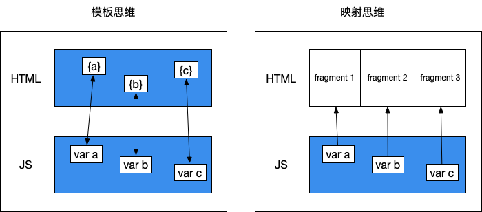

写在前面：本文谈论的是主观的个人感受，不追求立场的“客观、公正”，因此我下面所说的很可能是错的，欢迎交流指正。
我学习前端时，跟大部分beginner一样，学的第一个框架是Vue，入职后也一直写Vue。写了一年多，想换换口味了，于是决定最近的新项目改用React试试。用了大半个月后，我已经完全被这个迷人的框架洗脑了，特别是它背后的设计理念非常优秀，让人耳目一新。
React的设计思想有何过人之处呢？拿它和Vue做个对比就清楚了。
Vue之所以成为国内前端初学者（包括我）的首选，一方面是因为中文文档写得好，更重要的原因则是它符合人们对于网页开发的传统认知。
Vue虽然内部做了很多工作（如Virtual DOM），但暴露给开发者的体验更像是升级版的模板引擎，类似于Jade、Handlerbars。模板引擎的作用就是在静态的模板上动态替换JS变量，以渲染出最终的页面。基于Vue的项目目录下，每个组件目录下都有html、css、js文件三足鼎立（或者集中到一个.vue文件里，但仍然是分开的三部分），html是静态模板，js管理动态的变量，整体结构非常的直观。
此外，Vue在模板引擎的基础上增加了“双向绑定”功能，即用户输入造成的DOM变动可以反过来同步给关联的JS变量；并且自定义了一些v指令，大大简化了事件绑定、条件渲染、动态列表等常用功能的实现复杂度。这些因素使得Vue写起来既像模板引擎一样易于理解，又比模板引擎方便很多。我个人写Vue的时候，一般就是先写html模板，在此过程中把需要动态填充的数据定义出来，随手写个mock数据先占位；等模板写完了，再来写获取这些数据的js逻辑。
也就是说，Vue的开发思路差不多就是“写模板-填模板”的套路，与jQuery时代一脉相承。
这种套路上手容易，但是没什么发挥空间，写多了真的容易腻烦。而且在JS逻辑越来越复杂的情况下，状态管理非常麻烦，心智负担沉重。
骚年，要不要换一种玩法试试？
刚接触React的时候，是不是被嵌在js里的html（JSX）、满天飞的箭头函数、高阶函数等弄得有点不适应？反正我是脑阔疼了好一阵。
但是进一步了解React后就会明白，这不是脸书的攻城狮们在耍帅或者故弄玄虚，而是这些语法真的能够更好地表达React的思想，帮助代码作者和读者thinking in React。
React的核心思想是什么呢？不妨来看看Vue和React的组件对比。这是一个非常简单的组件——展示从父组件收到的message字符串：
Vue的实现：
// demo.vue
<template>
<div>{{message}}</div>
</template>
<script>
export default = {
props: ['message']
}
</script>React的实现：
// demo.jsx
export default props => (
<div>{props.message}</div>
);
这两段代码一眼就能一个非常明显的不同点——Vue组件实现为一个有模板（template）、有数据（props）的对象， React组件则实现为一个输入数据（props）、输出html片段（JSX）的函数。
函数有什么特别呢？从数学上讲，函数本质上就是表示一种映射关系。React受函数式编程思想的影响，将html视为数据映射的结果。一个数据映射出一个html片段，所有的html片段拼起来，就形成了完整的页面DOM树。当然，React组件还可以是class形式，但只是为了更好地操作数据，最终render函数会完成映射这一步。这是一种截然不同于模板填充的思维方式，姑且称之为“映射思维”。相应的，将变量绑定到模板上的思维方式就称之为“模板思维”。理解这两种思维的对立非常重要，因为这是React与Vue等其他框架的核心差异所在。
我画了如下两张图，尝试阐明模板思维与映射思维的不同：

这两种思维的根本分歧在于：视图层与数据层何者第一，何者第二？或者说，是先有html再有js，还是先有js再有html？
模板思维认为是先有html，再有js。正如上面图的左半部分所示，模板本身已经是一个接近完整的网页了，只不过其中几个变量没法确定，需要一点逻辑来动态填充，所以找了js这么个小弟来打打下手，把这几个变量给补上去。因此，在模板思维的世界观里，html居于主导地位，js服从于html的需要。
映射思维却相反，认为js里的数据才是第一性的，html只不过是数据层向视图层的单向映射或者说投影，如上图右半部分所示，一个个数据的投影片段拼起来，组成了完整的html。在这个世界观里，数据是本体，视图是现象，他们之间的关系就像一棵树与它的影子一样，要想改变影子，就必须改变树，而不能影子变了树没变。明白了这一点，React那些乍看之下有些奇怪的设定（如阻止input标签直接响应的用户输入），以及React社区对单向数据流的偏好（如Redux），就不难理解了。
我可不想像很多文章那样偷懒地来一句“各有优劣”，再不痛不痒地分别列举几个优缺点完事。我，旗帜鲜明地认为，映射思维才是前端未来正确的发展方向。
在上古时代的网页里，js只是嵌在html里的一行或者一小段脚本，干着弹个提示、飞个广告之类的杂活，远远称不上一个完整的程序，说它是html的小弟或补充，一点问题也没有。但如今，页面越来越复杂，异步加载、动态渲染的开发模式越来越流行，在这种模式下，整个页面都是由js绘制出来的，正是因为js对页面有了完全的掌控权，才使得网页真正进化为“WebApp”，成为一个真正的程序，而不再是一个简单的、无逻辑的类XML标记语言文件，进而使得数据-视图层的分离及其映射关系的建立成为可能。
在WebApp里，有一个原则显然应该被始终遵守——一致性，即用户看到的DOM元素状态应该与对应的js变量值保持一致。Vue的解决方案是双向绑定，React则实现了单向数据流，这都是从它们各自的世界观出发做出的自然而然的选择。但在我看来，视图=表象，不应该让表象承载实质，否则会导致形实关系的混乱——自然法则允许通过修剪树来改变它的影子，难道也要允许通过改变影子反过来改变树吗？表象就应该是实质的忠实呈现，以及用户触达实质的媒介（事件绑定），不应越俎代庖。
在模板思维看来，html模板和js数据都是实质，二者是并列的关系；在映射思维的世界观里，js数据是唯一的实质。
“如无必要，勿增实体”，我选择简单的那个方案。
事实也是如此，学会了thinking in React，可以在编写复杂页面的时候，仍然保持逻辑清晰和极度舒适。
真香！！！